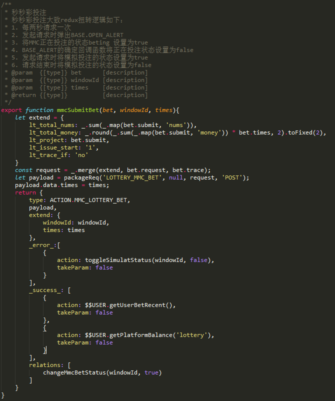

# 如何写出优雅的代码 #
——— 代码是给人看的，机器只是去偶尔执行它 ##
## 结论写前面

## 代码应当易于理解
代码是写给自己和别人看的：对于同一个功能实现有很多种方法，不管怎么写代码，代码最终都会编译成二进制，程序都会正常运行；但是有一点我们应该时刻记着。代码应该保持清晰的结构，这样对于后期的维护代码很大的便捷性。假如有一天回头要修改代码，你会感谢你自己
### 建立良好的命名规范
1. 约定俗成的命名方式（可以是项目为单位，可以是公司为单位）
- $$ 开头的变量都是ACTION事件
- __ 开头的变量都是全局状态
- 全大写的变量都是常量
- services 结尾的都是服务
- config 结尾的都是配置
2. 把信息封装到变量名称中
- 布尔值的用is/has开头
- 用min和max来表示（包含）极限：[min, max] 闭区间。
- 用first和last来表示包含的范围: [first, last] 闭区间 或 [first, last) 半闭半开区间。
- 对于一些需要特别说明的东西，在变量名的后面用下划线附带一些更多的信息。例如单位等等。形如”变量名_附加信息；“有目的的使用大小写和下划线等（即利用名字的格式来传递含义）
- 名称不应该是直译过来的表面意思
- 方法名称尽量使用动词开头
3. 不要尝试下面的骚操作
正确的示范：
错误的示范：
### 该写什么样的注释
好代码>坏代码+好注释 —— 不要写一堆注释去辩解屎一样的代码
注释的目的是尽量帮助读者了解得和作者一样多
什么不需要注释？
- 不要为那些从代码本身就能快速推断的事实写注释。
- 不要为了注释而注释。
- 不要给不好的名字加注释——而应该把名字改好。
那么，什么需要注释？
- 记录作者编码时的设计思想
- 记录难以理解的逻辑
- 解释与常规思维不相符的代码
- 公布可能的陷阱
- 另外，总结性注释对代码的阅读者理解整个代码的关联和逻辑是很有帮助的，尽量在每个函数前写注释。
约定俗成的注释
错误的示范：
正确的示范：
sublime 注释插件
DocBlockr## 能不能灵性一点？
### 如何避免写出耗油根？

你以为这是个段子？
让我们把异常情况提前返回，公共逻辑放到判断之外
示例1：修改后：
示例2：
修改后：
练习1:
练习2:
练习3:

提前返回退出当前逻辑的好处是，代码阅读者无需关注返回前的代码，脑子里无需记住当期实在异常情况中还是正常逻辑中。
尽量避免使用else，更不应该使用else if（ELSE IF 语句是完全可以被更好的写法代替的）
在提前使用return 及时退出当前逻辑的情况下，大多数else 都是无意义的
示例1：
示例2：
示例3：
练习1:
练习2:
练习3:
最小化嵌套
- 通过提早返回来减少嵌套；
- 通过 if(....) continue; 减少循环里的嵌套。
### 为什么不让我用全局变量？
- 使用全局变量实际上是增加了模块之间的耦合强度，同时会产生数据有效性问题。
- 重新构建你的数据结构，把公有数据成员抽离出来，单独做成模块，提供一个接口对其操作。
- 全局变量背离了问题局部化的思想，也容易造成副作用，所以使用时应当小心，避免产生难以调试的错误。
### 让函数单纯一点
百度说：函数的定义：给定一个数集A，假设其中的元素为x。现对A中的元素x施加对应法则f，记作f（x），得到另一数集B。假设B中的元素为y。则y与x之间的等量关系可以用y=f（x）表示。我们把这个关系式就叫函数关系式，简称函数。
细了解下为何要坚持这种「相同输入得到相同输出」原则。
### 可缓存性（Cacheable）
函数仅仅只是输入到输出的映射而已

>### 可移植性／自文档化（Portable / Self-Documenting）
### 可测试性（Testable）
纯函数让测试更加容易。我们不需要伪造一个“真实的”支付网关，或者每一次测试之前都要配置、之后都要断言状态（assert the state）。只需简单地给函数一个输入，然后断言输出就好了。
### 拆分复杂的逻辑到纯函数中，让入口函数去调用组合他们
用面向对象的思维方式，不是一个层面的东西，不要放在一起处理，学会按子逻辑处理问题